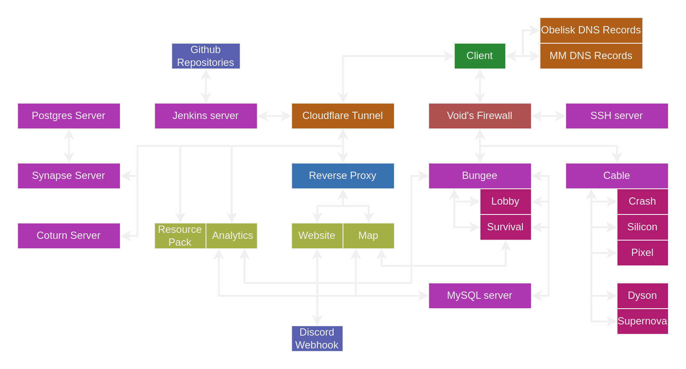

Overview
DNS is the way that your computer converts URLs into IP addresses. A DNS server stores records about what IP each URL maps to, and when a client wants to contact that URL, they make a request to their chosen DNS servers. DNS servers propagate DNS data between each other so it may take some time for information to update after you change it. Our DNS setup involves two DNS servers: the MetaMechanists DNS
- Our infrastructure is hosted by Void (free of charge) but Void doesn't have much involvement in it, so administration is done remotely via SSH (and sometimes anydesk) unless in exceptional circumstances
- We generally access the machine via SSH, ask Idra for details on how to do this + set up SSH keys
Infrastructure Diagram
Last updated 2023-03-30. See relevant pages for finer details on each piece of infrastructure.
